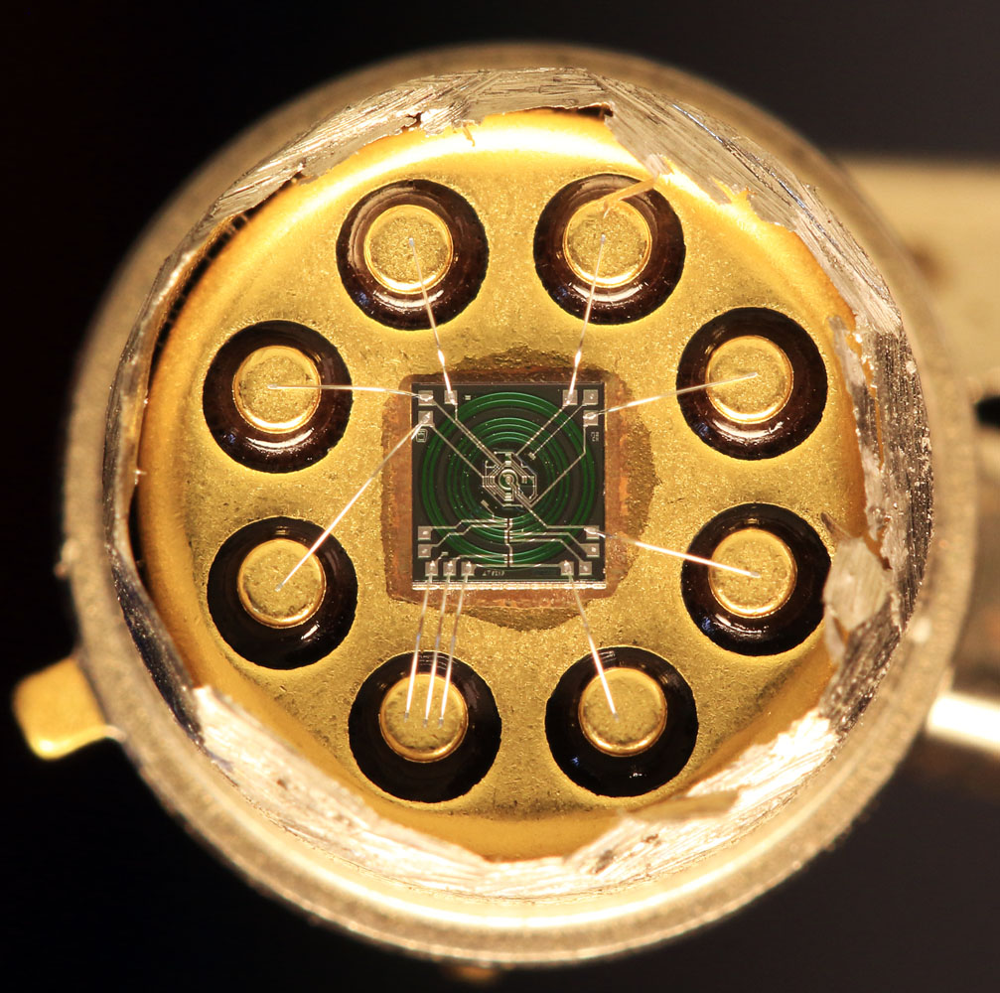

La LTZ1000 (et sa variante LTZ1000A) produite par Linear Technology (désormais Analog Devices) est considérée comme l'une des références de tension les plus stables et précises au monde. Elle sert d'étalon dans les multimètres de métrologie de classe 8½ digits, comme le célèbre Keysight 3458A.

01. Pourquoi est-elle si stable ?
Afin d'atteindre une dérive en température extrêmement faible (< 0.05 ppm/°C) et un bruit ultra-bas, la LTZ1000 intègre directement sur le substrat de silicium :
- Une Zener enterrée sous la surface : Évite les bruits d'interface et d'impuretés de la surface du silicium.
- Un transistor de régulation du courant : Permet d'asservir et de maintenir un courant d'avalanche constant à travers la Zener.
- Un élément chauffant & un transistor capteur de température : Permettent d'asservir la puce à une température constante supérieure à la température ambiante (souvent ~50°C à 65°C) à l'aide d'une boucle de contrôle externe.
- Une isolation thermique intégrée (sur la version LTZ1000A) : Réduit l'influence des courants d'air et de la température ambiante.
02. Documentation PDF complémentaire
Vous pouvez consulter le document complet en métrologie analogique sur notre dépôt GitHub :
Introduction à la LTZ1000.pdf (Maker Hub Lab)Point Clé en Métrologie
Même avec une référence aussi parfaite que la LTZ1000, la stabilité finale dépend à 90% du choix des résistances d'asservissement (type Vishay Foil ou Wirewound à très faible coefficient de température) et du soin apporté au tracé du PCB.